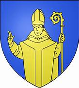
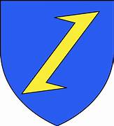

Bienvenue sur mon site internet porte folio, je m'appelle Gabriel Boehler, je suis actuellement en première année de Brevet Technicien Supérieur (BTS) Service Informatique aux Organisations (SIO).
FORMATIONS - EXPÉRIENCES
2021
2021
Obtention du diplôme national du brevet (mention très bien), au sein du collège Rembrandt Bugatti à Molsheim
2022
(Juin 2022)
Stage d'entreprise Gaggenau -Stage de fin d'étude de seconde qui m'a permis de découvrir le fonctionnement d'une entreprise, ses différents services ainsi que le déroulement complet d'un projet. Stage suivi d'une présentation au lycée
2022
Sept 2022 - 2024
Classe de Première et Terminale générales au lycée Louis Marchal à Molsheim, avec les spécialités Anglais LLCE, Mathématiques, et Numérique et Sciences Informatiques (NSI) en première. Puis avec les spécialités Mathématiques et NSI en Terminale
2023

.
Juin 2023 - Juil 2023
Emploi saisonnier durant la période éstivale. Cette expérience m'a permis de découvrir le monde du travail, ainsi que l'ésprit d'équipe et la cohésion afin de réaliser des projets au seins de l'espace public
2024
Juil 2024
Obtention du diplôme du Baccalauréat générale (mention bien) avec les spécialités Mathématiques et NSI
2024

Juil 2024 - Aout 2024
Emploi saisonnier, avec des mission diverses et variés comme l'entretient de matériel public,
2024 -
Sept 2024 -
Septembre 2024 Poursuite d'études dans l'informatique, avec un Brevet de Techinicien Supérieur Service informatique aux Organisations( BTS SIO) au Lycée René Cassin situé à Strasbourg